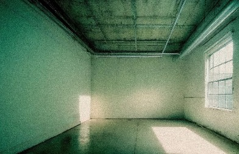
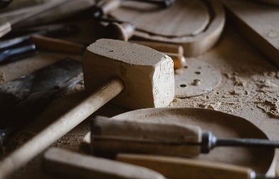
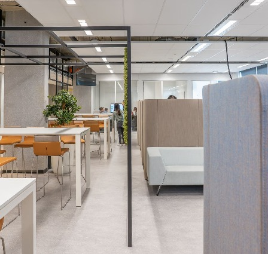
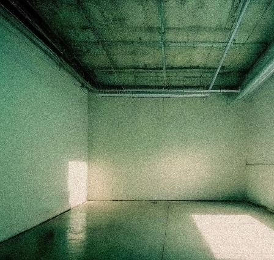
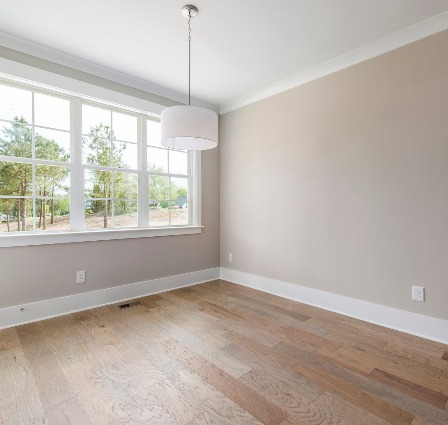

Pre-construction
A clear brief, measured information and an agreed sequence before work begins.
Thoughtful planning. Lasting spaces.
From the first sketch to the final detail. Bring your ideas into focus with a practical approach to building and renovation.
Explore our approachA clear brief, measured information and an agreed sequence before work begins.
Coordinate structure, services and finishes around an achievable scope.
Make spaces work harder through thoughtful layouts, practical detailing and careful handover.
Made for the way you live
A joined-up approach to the practical decisions behind every space.
A clear brief, measured information and an agreed sequence before work begins.
Explore this service
Coordinate structure, services and finishes around an achievable scope.
Explore this service
Make spaces work harder through thoughtful layouts, practical detailing and careful handover.
Explore this serviceA sheltered timber walkway brings a garden route together with careful junctions and a simple maintenance plan.
View project
An open workplace fit-out combines flexible desks, quieter meeting areas and practical everyday circulation.
View project
A phased workshop renovation gives an existing shell a clearer layout and a practical route to its next chapter.
View project
A bright residential renovation creates a flexible room with durable finishes and room for everyday life.
View projectDetails that matter
The best results are built from small decisions made at the right time.
Keep drawings, responsibilities and exclusions together so everyone can work from the same information.
Agree who makes decisions, when information is needed and how changes are recorded.
Think about access, maintenance, junctions and how materials will perform in everyday use.
Allow time for surveys, approvals, procurement and work that needs to happen in order.
Discuss site access, separation from occupied areas and the daily routines that protect people.
Collect operating information, finish schedules and a clear route for reporting outstanding items.